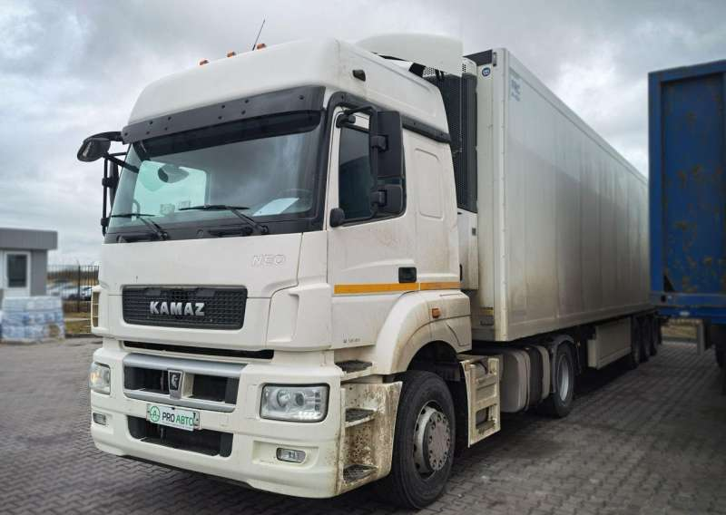
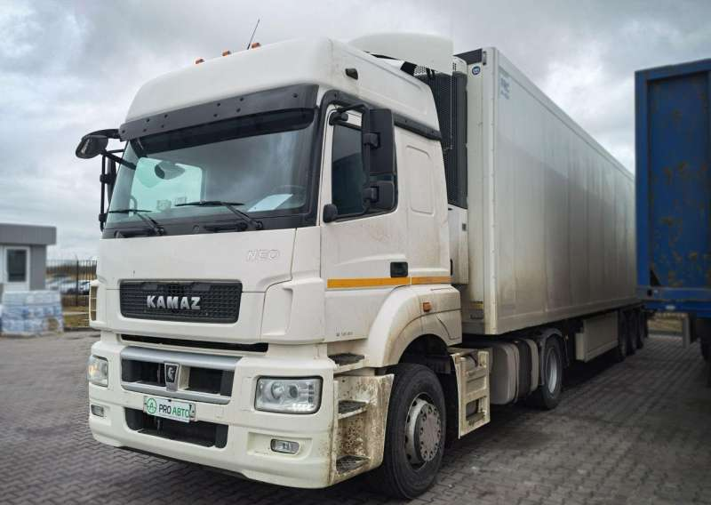

Седельный тягач КАМАЗ-65116
Мощный и надежный грузовик для междугородних и международных перевозок. Высокая проходимость, экономичность и соответствие нормам Евро-5.
Мощный и надежный грузовик для междугородних и международных перевозок. Высокая проходимость, экономичность и соответствие нормам Евро-5.
